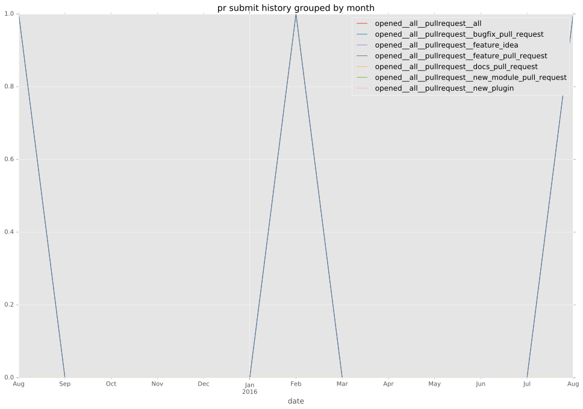

authors
- jcpowermac
maintainers
- jcpowermac
- mtnbikenc
contributors
- mtnbikenc : 3 commits
- chrrrles : 1 commits
- jcpowermac : 29 commits
total issue counts
bugfix pull request: 3
pullrequest: 3
issue: 1
bug report: 1
issue history
pullrequest history

days open by issue type
bugfix pull request
count: 6
std: 13.1757352736
min: 1
max: 27
median: 2.0
mean: 10.0
all
count: 7
std: 12.1753067821
min: 1
max: 27
median: 2.0
mean: 9.28571428571
pullrequest
count: 0
std: nan
min: nan
max: nan
median: nan
mean: nan
issue
count: 0
std: nan
min: nan
max: nan
median: nan
mean: nan
bug report
count: 1
std: nan
min: 5
max: 5
median: 5.0
mean: 5.0
closures grouped by total days open